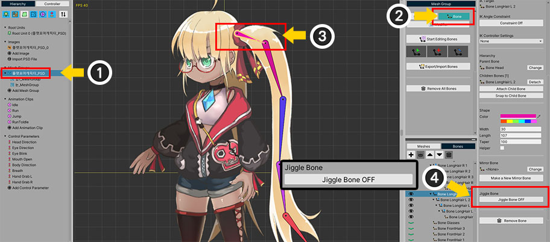
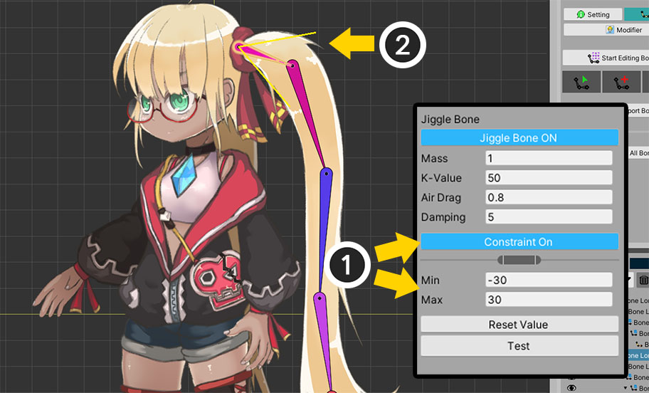

AnyPortrait > マニュアル > ジグルボーン
ジグルボーン
1.2.4

「ジグルボーン（Jiggle Bone）」は、物理的な効果が追加され、実際のと同じように動く骨を指します。
特に、AnyPortraitは「慣性」と「空気抵抗」による物理的な効果が適用されたジグルボーンをサポートします。
AnyPortraitでは「ジグルボーン」または「ジグル骨」と表記して同じ機能を指します。
AnyPortraitの「ジグルボーン」には、次のような特徴があります。
- リアルタイムでの骨のエンドポイントの位置を検出し、抵抗力と慣性を計算します。
- 「ヘルパー骨（Helper）」や長さが0である、骨は「ジグルボーン」が動作しません。
- 「Unityシーンでの位置の変化」と「アニメーションによる位置変化」によって、この機能が動作します。
- アニメーションに基本的な形を作って「ジグルボーン」を設定すると、さらにクオリティが向上します。
- 重力は適用されません。重力を表現したい場合は、「重力が適用された場合の形状」をアニメで作成した後「ジグルボーン」を適用します。
- IKチェーンが設定される必要はなく、1つの骨にも適用できます。
- スクリプトを利用して、apPortraitの物理動作を無効にするか(SetPhysicEnabled(bool))、Importantオプションがオフの場合には、この機能が動作しません。
- 連続した骨を対象に「ジグルボーン」を適用すると、相対的により敏感に揺れる傾向があります。
- AnyPortraitエディタの性能に応じて、シミュレーションの結果が多少不正確になることができます。 Unityシーンでテストを試みることをお勧めします。
- 画面キャプチャ機能で映像を録画するとき、物理的な効果をオンにすると「ジグルボーン」が適用された状態で録画がされます。ただし、Unityシーンでの動作とは多少異なる場合があります。
- 物理衝突による動きは演算されません。
このページは、上の画像のように「長い髪が自然に動くキャラクター 」を「ジグルボーン」を利用して、簡単かつ迅速に作成する方法を説明します。

(1) メッシュグループを選択します。
(2) 「Boneタブ」を選択します。
(3) 「ジグルボーン」を適用しようとする骨を選択します。
(4) 「Jiggle Boneボタン」を押してON状態に切り替えます。

「ジグルボーン」の設定を有効にすると上記のように属性が表示されます。
1. Mass : 質量です。値が大きくなるほど動きが鈍くなって重くなります。
2. K-Value : 元の形に戻ろう属性です。値が大きくなるほど速く弾力的に復元されます。
3. Air Drag : 空気抵抗を受ける程度で0から1の間の値を持ちます。値が大きいほど、外部の動きに敏感で大きく動きます。この値に基づいて「ジグルボーン」の効果の全体的な適用程度が決定されます。
4. Damping : 減衰力です。この値が大きいほど、揺れる時間が短くなって急速に元の形に復元されます。 K-Valueとは異なり、この値が大きければ弾性が減少します。
5. Constraint ON/OFF : 揺れる角度を制限することができます。制限しない場合は-180〜+ 180度の間の値に「ジグルボーン」が適用されます。
6. Reset Valueボタン：「ジグルボーン」の属性値を初期化します。
7. Testボタン：このボタンを押すと、すべての「ジグルボーン」に同じ任意の力がかかります。属性の値をテストすることができます。

回転範囲を制限してみましょう。
(1) 「Constraintボタン」を押してON状態に移行して、角度を設定することができます。
(2) ワークスペースで、骨の回転範囲が黄色の線で表示されます。
さて、「ジグルボーン」は、指定した角度以内で揺れるされます。
ただし、この角度は、最大範囲であり、実際には自然な動きのために範囲の約70％程度から速度が減少し始めます。

他の骨にも「ジグルボーン」を適用します。
複数の骨を選択して、一度に「ジグルボーン」を適用することができます。
(1) 対象となる骨をすべて選択します。 （CtrlキーまたはShiftキーを押して、多数の骨を選択することができます。）
(2) 右のUIで「ジグルボーン」を同時に設定することができます。

「ジグルボーン」をすぐにテストすることができます。
(1) 「骨編集モード」を解除します。 （骨編集モードでは、「ジグルボーン」が無効になり、テストボタンを押すことができません。）
(2) 「Testボタン」を押します。
(3) 「ジグルボーン」が適用されたすべての骨が動くのを見ることができます。
テスト機能を利用して、物理属性を簡単に調節することができます。

ルートユニットやアニメーションの編集画面でアニメーションを再生すると、「ジグルボーン」が適用された状態で動くキャラクターを見ることができます。
ワークスペースで上記のように物理的な効果を見ないように設定すると、「ジグルボーン」は適用されません。
Bakeをした後、Unityシーンでも「ジグルボーン」をテストしてください！